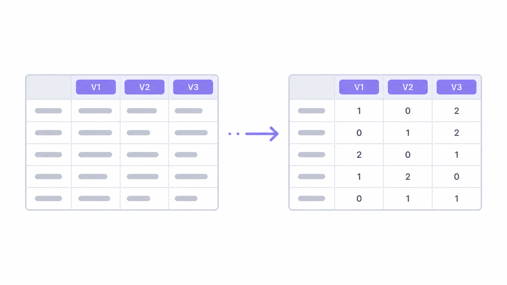
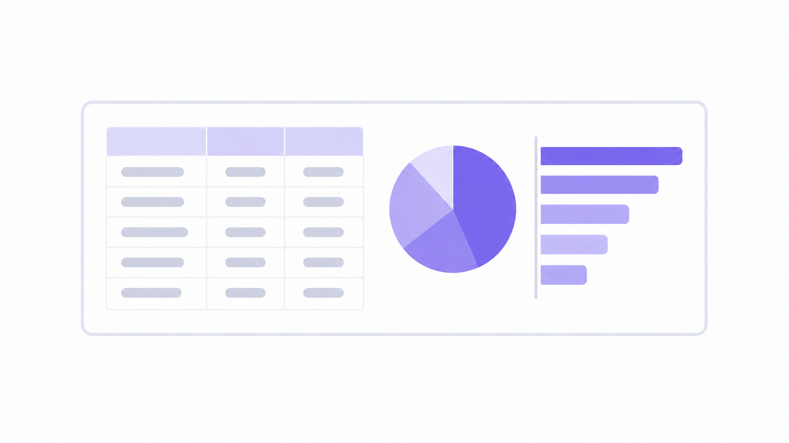
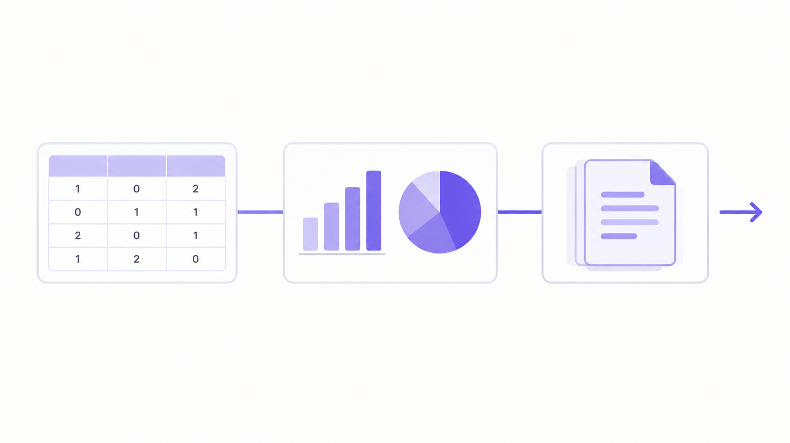

加工から分析まで、
もっと手軽に分かりやすく。
元データの数値化から簡単な集計まで、分析に使うデータづくりを支援します。
無料で使えるブラウザ上のツールで、回答データは利用者の端末内で処理されます。
主な機能


アンケート分析を、もっと手軽に。
元データの数値化から簡単な集計まで、分析に使うデータづくりを支援します。
無料で使えるブラウザ上のツールで、回答データは利用者の端末内で処理されます。


